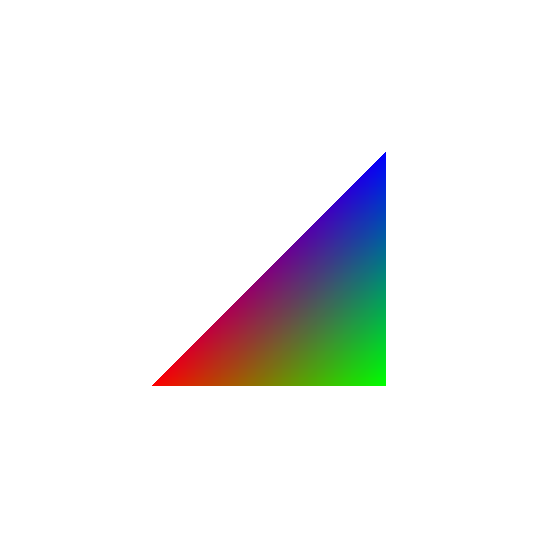

|
Tucano
1.0
A library for rapid prototyping with modern OpenGL and GLSL
|
|
Tucano
1.0
A library for rapid prototyping with modern OpenGL and GLSL
|
Once you have completed the Transformation Exercises it is time to start working with the Shaders, the real meat of OpenGL. For the following exercises you will work on four different files:
You will make small alterations along the whole pipeline, and hopefully, by the end of these exercises you will understand how the rendering pipeline works in practice.
If you run the shaders-pipeline program without any modifications, you should see the following green triangle on your screen:
Tip: if you press 'S' a screenshot of your application will be saved in a PPM file.
For each of the exercises below you can find a screenshot of the solutions in the folder solutions
The first exercise is very simple. Go to the shading.frag file and change the color to orange (Red=1.0, Green=0.5, Blue=0.0). Note that when you modify the fragment shader, all the generated fragments from the triangle will be effected.
Tip: you can reload the shaders at run time, no need to exit your application and recompile the code. Just make the modification on the shader file, save it, and press 'R'. If there are no errors, your shader will be recompiled and reloaded, and you will see the changes immediately.
Now your triangle should look like this:
Now let's try to modify the vertex shader shading.vert. Note that when you modify your vertex shader, the changes will apply to all vertices, in this case the three vertices of the triangle.
Add the following translation vector to your vertices:
Tip: add a vec4(x,y,z,w) to the vert variable
Note: what is the correct value of w for the translation vector?
Your triangle should have moved to the bottom right corner of the screen (independent of the color):
Note: remove the translation from the previous exercise before starting, so your triangle is again centered.
In GLSL there is no rotation method, as we have seen with the Eigen library. One option is to create a rotation matrix inside the shader, just as you did with the translation in the last exercise. Another option is to rotate the Model or View matrices, as we have seen in the Transformation Exercises. Here, we will you an alternative solution, we will create a rotation matrix and pass this new matrix as an uniform to the shader. Uniforms are like global variables, they hold the same value for all the vertices (or fragments if the uniform is in the fragment shader).
Here are the steps:
You should see your triangle like this (remember to remove the translation from the previous exercise):
Note: Remove the rotation from the previous exercise before starting.
While uniforms act as global variables, attributes are local variables that hold specific values for each call of the shader (for each vertex or each fragment).
For example, every time the vertex shader is called, a different value is assigned to the attribute called in_Position (the vertex's xyzw coordinates). The word in precedes the vec4 in_Position to indicate that the variable is coming into the vertex shader.
When you pass an attribute per vertex to the fragment shader, the attribute will be interpolated inside the triangle (i.e. for each generated fragment).
When the variable in the vertex shader is preceded by the word out it means that it will be linearly interpolated and will be received by the fragment shader as an in variable.
In this exercise we will create a new color attribute to be interpolated, so you can better understand how this works. Follow the steps:
Note: note in step 2 how in GLSL we can operate on only some elements of the vector. This is called Swizzling (read more about swizzling here)
Now, each vertex has a different color, and all the generate fragments will receive the linearly interpolated color from the three vertices depending on their coordinates inside the triangle.
You should see the following result:
In the last exercise we create artificial colors using coordinates values just for illustration. What if you want to set specific colors to the vertices? In GLSL you could actually retrieve the vertex id inside the vertex shader, and do something like:
But if you have thousands of vertices and triangles you can immediately see that this becomes unfeasible. A better way is to create a new vertex attribute and set the values outside the shaders (in your C++ code).
Tucano allows you to add any generic attribute to the vertices. Attributes may have different values per vertex, and they are received in the vertex shader as a in variable. They are usually floats or 2/3/4D vectors. Your shader already has an in vec4 in_Position, and now we are going to add a color attribute to the vertices.
In the createGeometry method in the widget.cpp file, you can see that a vector of Eigen::Vector4 called vertices was created, and values were assigned to the vector using push_back. Then the attribute was added to the mesh using the method loadVertices. These values are read in the vertex shader from the variable in vec4 in_Position. Every time the vertex shader is called for each vertex, the appropriate corresponding value will be available in this in attribute variable.
The mapping from the mesh Vertices attribute to the in variable of the shader is done by Tucano when the method setDefaultAttribLocations is called. Tucano uses the following default mapping names from mesh attributes to shader in variables:
You could also create new attributes and set their own in names in the shader, but here we will use the default name for colors.
As a last remark, so far, the mesh does not know anything thing about the shader itself. The actual connection with a specific shader is done in the render method by calling:
Briefly, this methods transforms the names of the variables in locations, which are ids in GLSL. You do not really need to know about locations to complete the assignments, but if you are curious visit this page.
Note: Why is this necessary? Why isn't the setDefaultAttribLocations enough? Because one mesh could be rendered using different shaders, and the vertex attributes might have different locations (ids) in different shaders, even though the variable names are the same. This internal mapping of names and locations is done by the shader class in Tucano.
Finally, here are the steps to create the color attribute:
Note: do not forget to call the loadColors method of the mesh to load the values.
The result should look like this:

 1.8.13
1.8.13